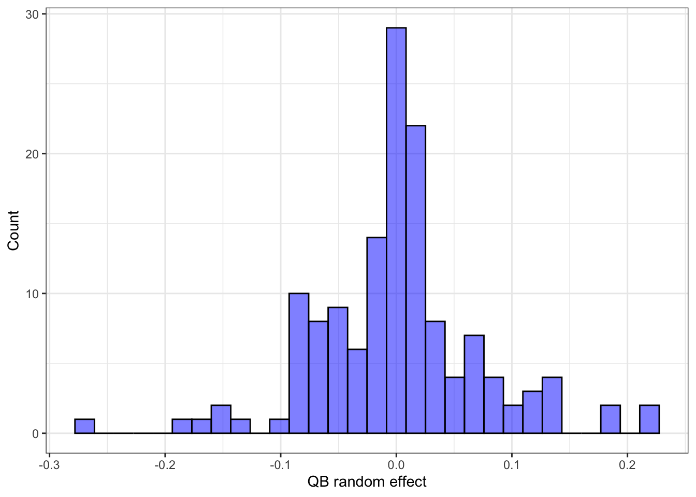
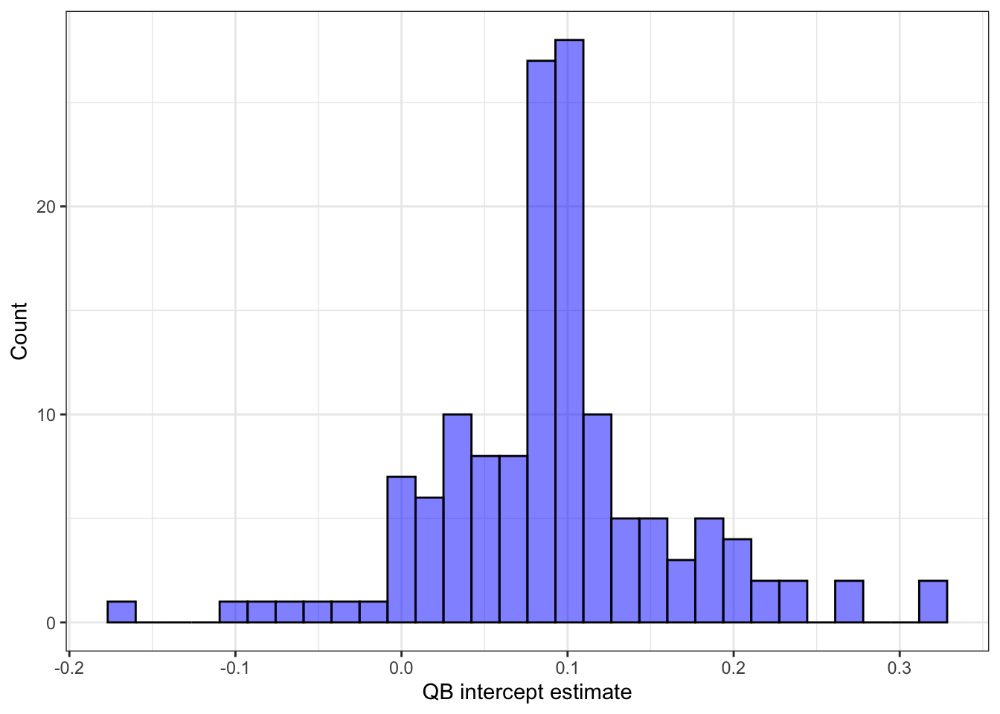
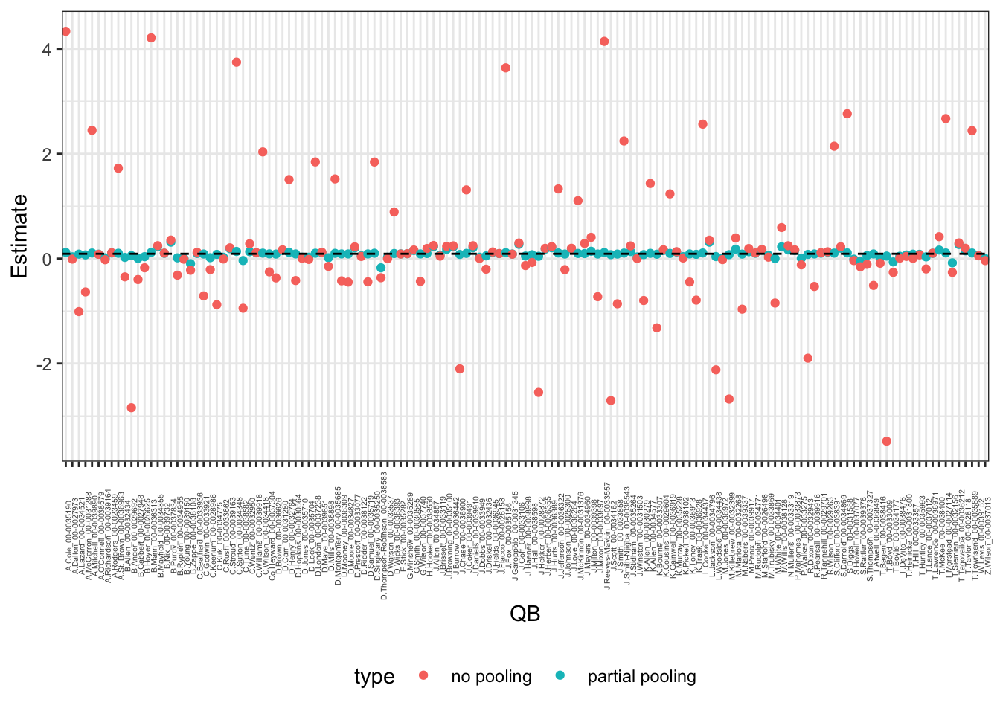
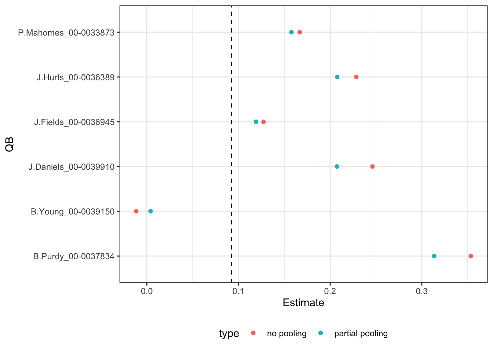

The purpose of this demo is to demonstrate how to access random effect estimates from multilevel models with insight about the behavior of pooling. Building off the previous demos and lecture content, we’ll look at this in the context of modeling the dataset of NFL pass attempts. As a reminder, you can find the dataset and code to create the data (init_nfl_passing_data.R) on Canvas in the demos/week3 folder.
The following code chunk reads in the relevant dataset (assuming it is in the correct directory) of passing plays:
# A tibble: 35,987 × 17
game_id play_id drive posteam defteam posteam_type passer_name_id
<chr> <dbl> <dbl> <chr> <chr> <chr> <chr>
1 2023_01_ARI_WAS 77 1 WAS ARI home S.Howell_00-00370…
2 2023_01_ARI_WAS 124 1 WAS ARI home S.Howell_00-00370…
3 2023_01_ARI_WAS 147 1 WAS ARI home S.Howell_00-00370…
4 2023_01_ARI_WAS 172 1 WAS ARI home S.Howell_00-00370…
5 2023_01_ARI_WAS 197 1 WAS ARI home S.Howell_00-00370…
6 2023_01_ARI_WAS 220 1 WAS ARI home S.Howell_00-00370…
7 2023_01_ARI_WAS 332 2 ARI WAS away J.Dobbs_00-0033949
8 2023_01_ARI_WAS 357 2 ARI WAS away J.Dobbs_00-0033949
9 2023_01_ARI_WAS 380 2 ARI WAS away J.Dobbs_00-0033949
10 2023_01_ARI_WAS 526 3 WAS ARI home S.Howell_00-00370…
# ℹ 35,977 more rows
# ℹ 10 more variables: receiver_name_id <chr>, complete_pass <dbl>,
# pass_location <chr>, air_yards <dbl>, qb_hit <dbl>, epa <dbl>,
# yardline_100 <dbl>, down <dbl>, ydstogo <dbl>, is_home <dbl>
Accessing random effect estimates
We’ll first demonstrate how to grab random effect estimates in the context of a varying intercepts model for modeling EPA, using the same model from the varying_ints_slopes.qmd demo. The following code chunk fits this model (with the default setting of REML = TRUE this time):
library(lme4)
Warning: package 'lme4' was built under R version 4.2.3
Loading required package: Matrix
Warning: package 'Matrix' was built under R version 4.2.3
Attaching package: 'Matrix'
The following objects are masked from 'package:tidyr':
expand, pack, unpack
epa_lmm <-lmer(epa ~ (1| passer_name_id), data = nfl_passing_data, REML =TRUE)summary(epa_lmm)
Linear mixed model fit by REML ['lmerMod']
Formula: epa ~ (1 | passer_name_id)
Data: nfl_passing_data
REML criterion at convergence: 133283
Scaled residuals:
Min 1Q Median 3Q Max
-8.3024 -0.5206 -0.1420 0.5539 5.6367
Random effects:
Groups Name Variance Std.Dev.
passer_name_id (Intercept) 0.01467 0.1211
Residual 2.37035 1.5396
Number of obs: 35987, groups: passer_name_id, 141
Fixed effects:
Estimate Std. Error t value
(Intercept) 0.09218 0.01703 5.412
There are a couple of ways of accessing the random effects estimates from the model. The first way is to use the lme4 package function ranef():
You can see this returns a list of the individual effects for each QB. Note, that these values alone are NOT the mean intercept for each QB in the dataset. Instead, you must add the fixed effect intercept to these values to get the QB-specific intercepts.
In order to make a process like that easier, it can be helpful to use the broom.mixed package which has convenient helper functions for tidying the lme4 model output. We can extract the random effects from the model using this package with tidy(lmer_model, effects = "ran_vals"), and store the values in a table:
library(broom.mixed)
Warning: package 'broom.mixed' was built under R version 4.2.3
qb_ranef <-tidy(epa_lmm, effects ="ran_vals")# View the datasetqb_ranef
We can visualize the distribution of the QB random effects to see how they are centered around zero below:
qb_ranef |>ggplot(aes(x = estimate)) +geom_histogram(color ="black", fill ="blue", alpha =0.5) +labs(x ="QB random effect", y ="Count") +theme_bw()
`stat_bin()` using `bins = 30`. Pick better value with `binwidth`.

We can add a column to this table with the intercepts for each QB by simply adding the fixed effect intercept (grabbed with fixef(epa_lmm)) to the estimate column in the dataset above:
The following figure now displays the QB intercepts, which is effectively the same figure as before but now the center is shifted based on the fixed effect intercept:
qb_ranef |>ggplot(aes(x = q_intercept)) +geom_histogram(color ="black", fill ="blue", alpha =0.5) +labs(x ="QB intercept estimate", y ="Count") +theme_bw()
`stat_bin()` using `bins = 30`. Pick better value with `binwidth`.

Demonstration of pooling for intercepts
To demonstrate the role of pooling, we can compare the QB intercepts from the multilevel model above versus the traditional regression approach by fitting separate intercepts for each QB. For instance, the following code chunk fits an intercept-only regression model without random effects (note the use of -1 to remove the global intercept here):
naive_epa_lm <-lm(epa ~-1+ passer_name_id, data = nfl_passing_data)summary(naive_epa_lm)
In order to make a plot comparing the coefficients, we can make a modified version of this table containing a column with the passer_name_id and fixed effect version for coefficients:
qb_fixed_eff <- qb_naive_coefs |> dplyr::select(term, estimate) |># Remove the `passer_name_id` in the stringsmutate(term =str_remove(term, "passer_name_id")) |>rename(passer_name_id = term,fixed_eff = estimate)qb_fixed_eff
We can now join this table of fixed effect QB estimates to the table containing the random effects via a join function (such as left_join() or inner_join() but my default behavior is to typically use left_join()):
Using this table, we can now create a figure that displays the two types of estimates: no pooling (fixed_eff) and partial pooling (q_intercept). The following code chunk shows how to do this using the pivot_longer() function to make the dataset in a long format for ggplot2:
long_qb_eff_table <- qb_ranef |> dplyr::select(level, q_intercept, fixed_eff) |>pivot_longer(q_intercept:fixed_eff,names_to ="type",values_to ="estimate") # Now make the visualization:long_qb_eff_table |># First recode the name of the estimate types:mutate(type =fct_recode(type, `no pooling`="fixed_eff",`partial pooling`="q_intercept")) |>ggplot(aes(x = level, y = estimate, color = type)) +geom_point() +# Add horizontal dashed line for fixed effect intercept:geom_hline(yintercept =as.numeric(fixef(epa_lmm)),linetype ="dashed", color ="black") +labs(x ="QB", y ="Estimate") +theme_bw() +theme(axis.text.x =element_text(angle =90, size =4),legend.position ="bottom")

We can see the noticeable impact from pooling on the QB intercepts, with all of the partial pooling estimates from the multilevel model getting pulled towards average line versus the extreme values based on no pooling.
To illustrate this idea more clearly, the following figure zooms in on a sample of QBs (arbitrarily picked by me):
long_qb_eff_table |>filter(str_detect(level, "(Purdy)|(Mahomes)|(Fields)|(J\\.Daniels)|(Hurts)|(B\\.Young)")) |>mutate(type =fct_recode(type, `no pooling`="fixed_eff",`partial pooling`="q_intercept")) |>ggplot(aes(x = level, y = estimate, color = type)) +geom_point() +# Add horizontal dashed line for fixed effect intercept:geom_hline(yintercept =as.numeric(fixef(epa_lmm)),linetype ="dashed", color ="black") +labs(x ="QB", y ="Estimate") +theme_bw() +coord_flip() +theme(legend.position ="bottom")

Comparison of regression lines
As we discussed in previous lectures and demo material, we can add in other covariates as fixed effects. The use of varying intercepts will effectively lead to a distribution of regression lines for each passer in the dataset that is centered around the average passer line. The following code chunk first fits the updated lmer model with air yards as an additional feature:
Linear mixed model fit by REML ['lmerMod']
Formula: epa ~ air_yards + (1 | passer_name_id)
Data: nfl_passing_data
REML criterion at convergence: 132840.3
Scaled residuals:
Min 1Q Median 3Q Max
-8.3328 -0.5391 -0.0849 0.5736 5.3048
Random effects:
Groups Name Variance Std.Dev.
passer_name_id (Intercept) 0.01414 0.1189
Residual 2.34071 1.5299
Number of obs: 35987, groups: passer_name_id, 141
Fixed effects:
Estimate Std. Error t value
(Intercept) -0.0383751 0.0178653 -2.148
air_yards 0.0169528 0.0007922 21.400
Correlation of Fixed Effects:
(Intr)
air_yards -0.342
Similar to before, we can grab the random intercepts for each passer:
upd_qb_ranef <-tidy(air_epa_lmm, effects ="ran_vals")# View the datasetupd_qb_ranef
And then modify the dataset to include columns for the regression intercepts and slopes based on the fixed effects:
upd_qb_ranef <- upd_qb_ranef |># Grab the fixed effect estimates and coefficients via 1 for intercept and # 2 for slope:mutate(q_intercept = estimate +as.numeric(fixef(air_epa_lmm))[1],q_slope =as.numeric(fixef(air_epa_lmm))[2])
With this dataset, we can now make a visualization that has a regression line for every QB given their respective intercepts (and shared slope):
For reference we will also add the “center” regression line on top of the distribution of regression lines just based on the fixed effects. You can see in the figure below that this average line (in dashed red) aligns closely with the thick black line from the previous figure that represents the mode of the regression lines: